01 / WORLD MODEL
物理约束的多模态世界模型
融合视觉、激光雷达、车辆状态与道路信息，以循环状态空间模型建立连续表征；将车辆运动规律、道路边界和安全约束融入扩散推演，让预测更贴近真实驾驶条件。
多模态融合时序推演物理一致性
查看技术详情 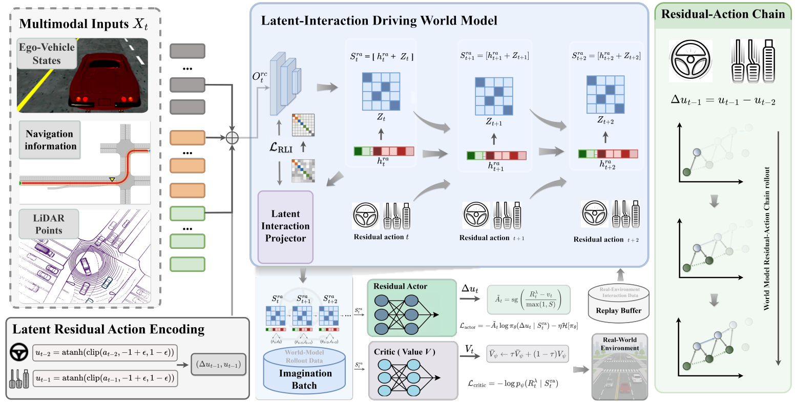
第八届中国研究生人工智能创新大赛 · AMC 至善车队
面向复杂交通环境，融合未来状态推演、长尾风险场景生成与风险感知决策，构建可持续迭代的自动驾驶闭环技术体系。
项目总展示 · 世界模型驱动的自动驾驶闭环决策控制
世界模型驱动的端到端自动驾驶闭环决策控制框架
本项目面向复杂动态交通环境中未来状态预测不足、长尾风险场景覆盖有限，以及实时决策安全性难以兼顾等问题，构建以世界模型为核心的自动驾驶闭环决策控制系统。系统将环境理解、未来推演、场景生成与风险评估连接起来，为车辆提供执行前的前瞻判断能力。
在环境建模层，系统融合多视角视觉、激光雷达、车辆状态和道路拓扑等信息，通过循环状态空间模型学习时空一致的潜在表征，并将车辆运动学、道路边界与安全约束嵌入扩散世界模型，实现多主体交通状态的连续推演。
在训测与决策层，世界模型依据策略的决策边界主动生成高价值极端场景，并将闭环测试中的失效片段回流训练；风险感知混合专家进一步提出多类候选行为，结合未来收益与安全代价完成轨迹级筛选和滚动控制。
项目已在 Highway-Env、MetaDrive、nuPlan、硬件在环及低速无人车平台开展分层验证，形成从仿真推演、对抗测试到实车运行的技术链路。
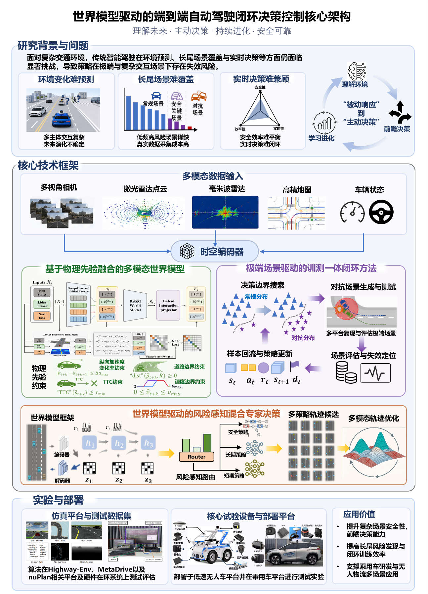
多模态世界模型、极端场景训测闭环与风险感知混合专家决策构成协同架构。
融合视觉、激光雷达、车辆状态与道路信息，以循环状态空间模型建立连续表征；将车辆运动规律、道路边界和安全约束融入扩散推演，让预测更贴近真实驾驶条件。

依据策略的决策边界生成高价值交互场景，将闭环测试暴露的关键失效片段回流训练。场景随模型能力变化持续更新，形成“生成—测试—反馈—更新”的迭代机制。

长时学习、短时记忆与规则安全专家并行生成候选行为。世界模型预估未来收益与风险，再由混合高斯轨迹优化筛选可行方案，支持滚动决策与控制。
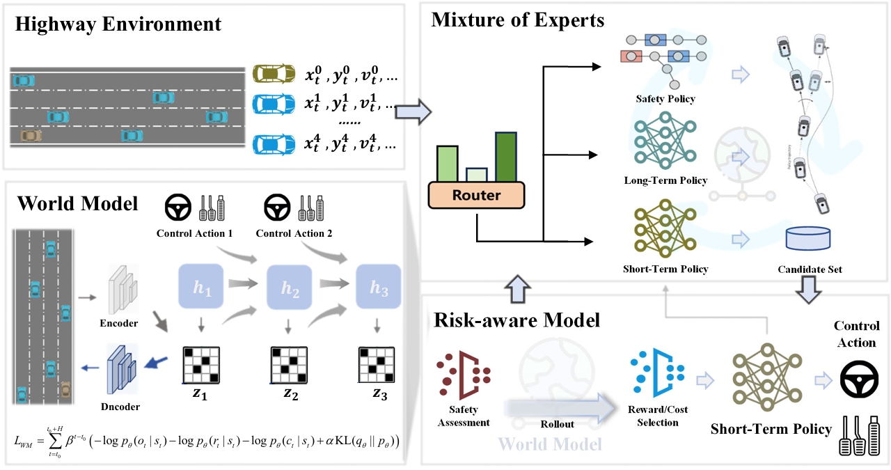
在仿真平台、硬件在环与低速无人车平台上验证场景适应性和闭环运行能力。
在 Highway-Env、MetaDrive 与 nuPlan 中开展交通交互、长轨迹规划及真实驾驶数据回放测试。
结合硬件在环及低速无人车道路测试，评估绕障、超车回道和动态交互避让等任务。
相关方法参加 OnSite 自动驾驶算法挑战赛，取得全国第三名。
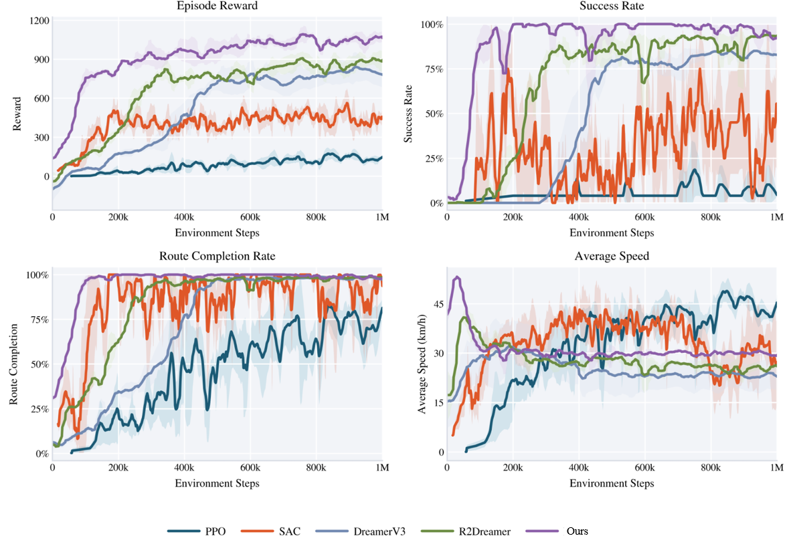
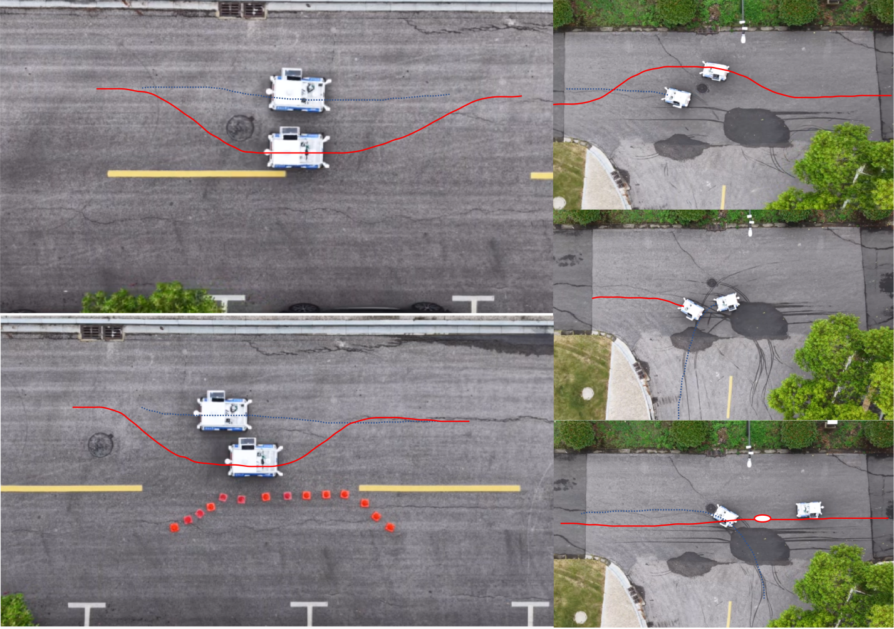
展示复杂交通场景中的交互工况、多视角仿真及车辆运行片段。
覆盖多车道、路口、交汇区域及湿滑路面等不同交通条件。
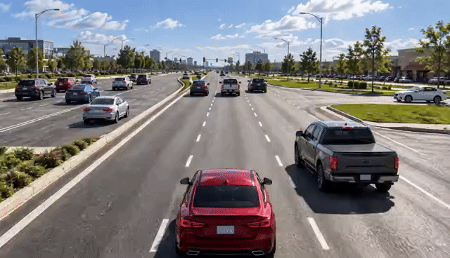
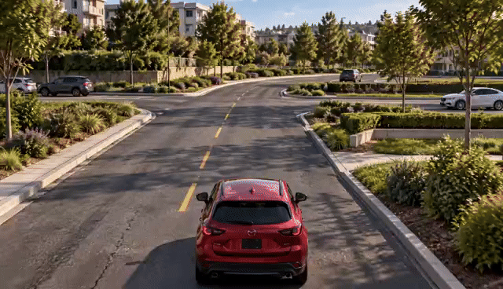
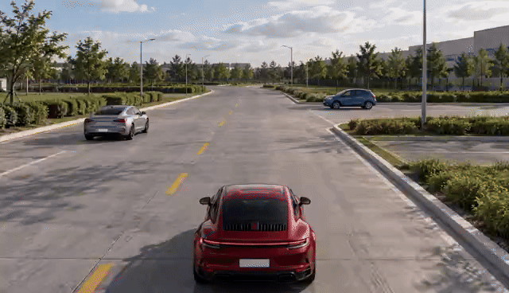
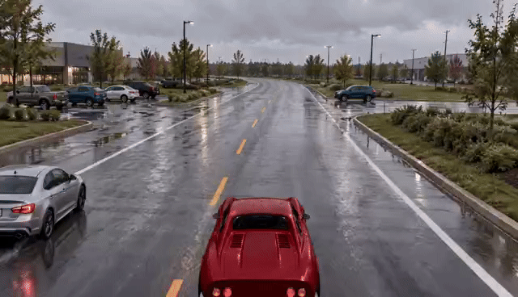
多视角画面与道路场景同步展示。
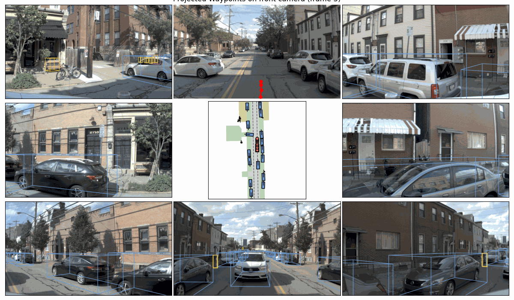
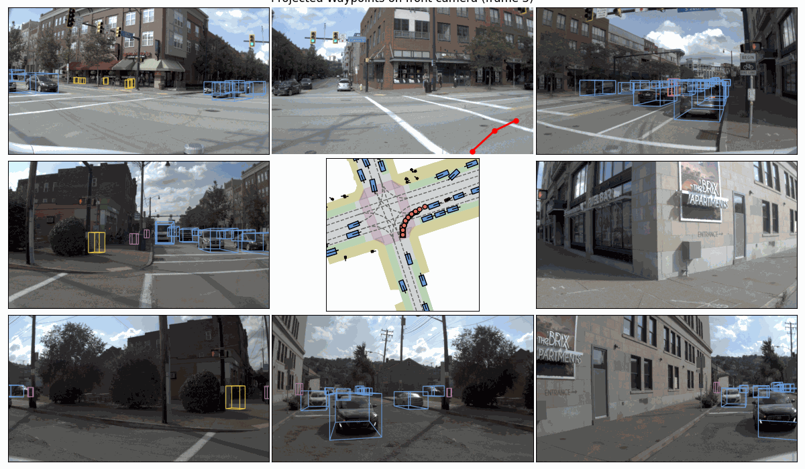
实车闭环驾驶及低速无人车不同视角的运行视频。